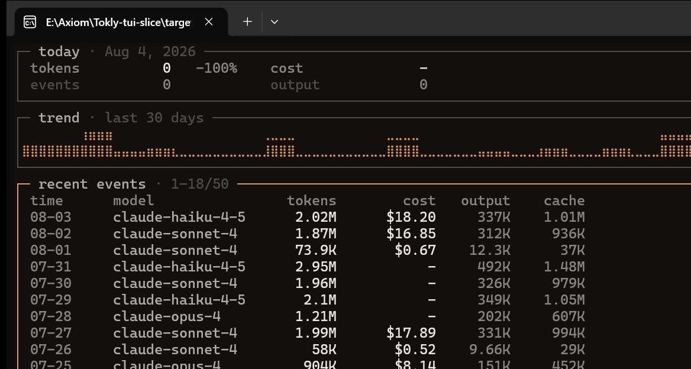
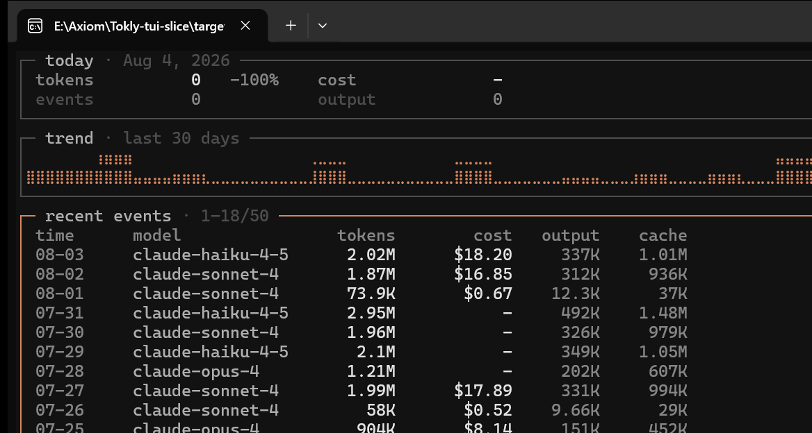
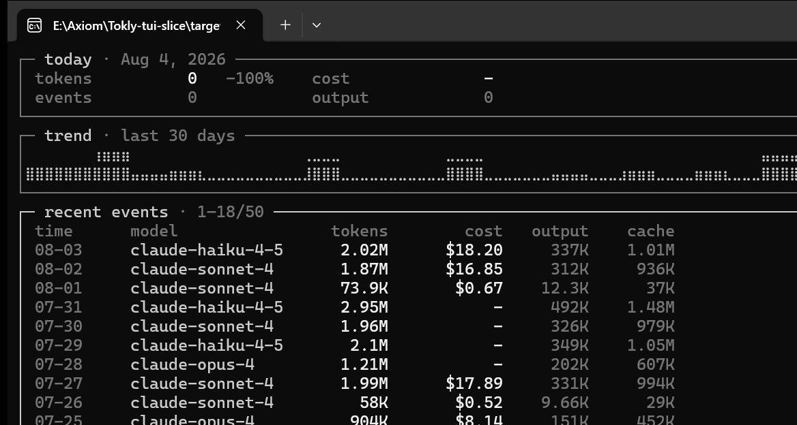

阶段九 · TUI 可视化交付物
双击本文件即可离线查看。SVG 为 TestBackend 真实渲染缓冲的逐格序列化（字形与各档色值即终端所收内容）；
conpty/*.png 为 Windows Terminal（ConPTY）真机窗口捕获。三档真机像素实测：truecolor 命中 #E0985A（accent.solid 精确值）、
256 命中 #D7875F（xterm 173 精确值）、16 档按规格落 white（色相丢失为文档已知损失）。
录屏 · 交互序列（启动骨架 → 数据 → t 主题 × 2 → Tab 历史 → 80 列 → 60 列 → 摘要行）
svg/session.svg · 动画自动循环，无需安装任何东西
真机 ConPTY（Windows Terminal · amber-dark · 监控视图）

truecolor

256

16（accent 落 white，规格已知损失）
矩阵 · amber-dark（宽度 × 色档）
monitor 120 · truecolor
monitor 120 · 256
monitor 120 · 16
monitor 80 · truecolor
monitor 60 · truecolor（列从右整列丢弃）
history 120 · truecolor（braille 热力图）
history 80 · truecolor（mini bar 可见）
history 60 · truecolor
history 120 · 16（热力仅靠密度）
diagnostics（只读降级态）
mono 家族（C=0 纯灰）与浅色配对
mono-dark monitor 120 · truecolor
mono-dark history 120（灰阶明度分档）
amber-light monitor 120
paper-light history 120
完整 40 张矩阵在 svg/ 目录（amber-dark 与 mono-dark 各 3 宽度 × 3 档 × 2 视图）。